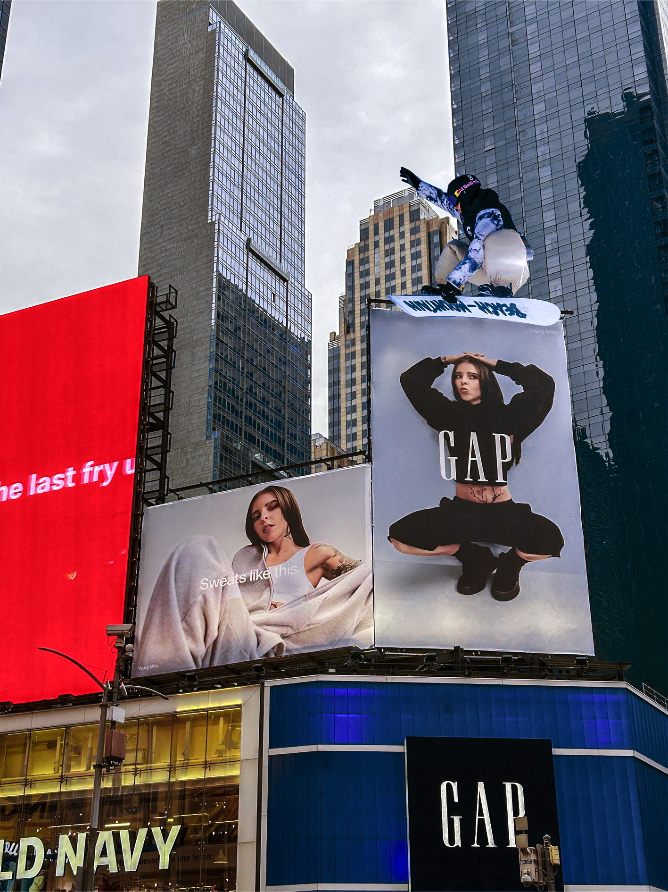

Images

For this project I used 4 images. These images represent me because I used to do BMX
and I started to snowboard not much ago. I had a completely different idea for this
project but my skills and the images that I found didn’t help me too much so I ended up
putting things that I like to combine. BMX and cyberpunk because I like video games,
snowboarding and the city because I snowboard and I live in the city which is difficult
to do because the mountains are really far from here. The prompt of the AI was really
unexpectable but I definitely like it because it is something that I would never think of
and it’s weird. The most challenging part was getting adapted to the software because
I’ve never used photoshop before this project and I think it is a really complex software
that requires a lot of time to get adapted.
Software Used: Photoshop